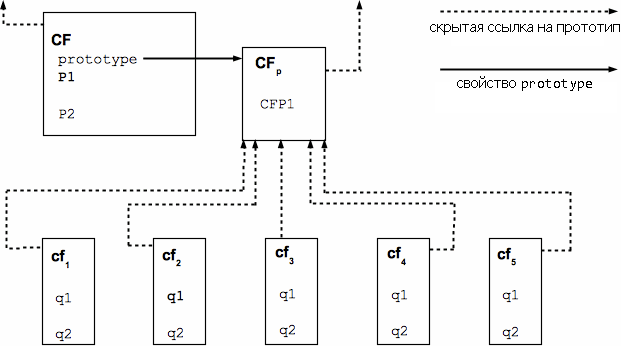

Спецификация ECMAScript 5.1 с аннотациями


‟Ex igne vita”
Данный раздел содержит описание языка ECMAScript, не являющееся нормативным.
ECMAScript представляет собой объектно-ориентированный язык программирования, предназначенный для проведения вычислений с вычислительными объектами и управления этими объектами в среде выполнения. В соответствии с определением, приведенном в данном документе, язык ECMAScript не предназначен для использования в качестве самодостаточной вычислительной системы – в данной спецификации даже отсутствуют средства для ввода внешних данных или вывода результатов вычислений. Однако, предполагается, что вычислительная среда для программы на языке ECMAScript предоставит не только объекты и иные средства, описанные в настоящей спецификации, но и некоторые объекты, определяемые конкретной средой. Описание и поведение этих объектов не является предметом данной спецификации, однако необходимо отметить, что упомянутые объекты могут предоставлять определенные свойства, к которым можно обратиться из программы, написанной на ECMAScript, и определенные функции, которые можно вызвать из программы на ECMAScript.
Скриптовый язык – это язык программирования, используемый для управления средствами существующей системы, а также для их настройки и автоматизации. В таких системах пользовательский интерфейс уже имеет набор полезных функциональных возможностей, а скриптовый язык является лишь механизмом, позволяющим ими программно управлять. Таким образом, считается, что существующая система обеспечивает среду объектов и средств, дополняющую возможности скриптового языка. Скриптовый язык предназначен для использования как профессиональными программистами, так и любителями.
Изначально ECMAScript задумывался как язык веб-скриптов, обеспечивающий механизм, позволяющий оживлять интернет-страницы браузеров и производить вычисления на стороне сервера в рамках архитектуры клиент-сервер. ECMAScript может предоставлять основные скриптовые возможности для множества сред выполнения, поэтому в настоящем документе основной скриптовый язык указан без привязки к какой-либо конкретной среде.
Некоторые возможности языка ECMAScript аналогичны возможностям, используемым в других языках программирования, в частности – языкам Java™, Self и Scheme, описание которых содержится в следующей документации:
Gosling, James, Bill Joy and Guy Steele. The Java™ Language Specification. Addison Wesley Publishing Co., 1996.
Ungar, David, and Smith, Randall B. Self: The Power of Simplicity. OOPSLA '87 Conference Proceedings, pp. 227–241, Orlando, FL, October 1987.
IEEE Standard for the Scheme Programming Language. IEEE Std 1178-1990.
Веб-браузер предоставляет среду выполнения ECMAScript для вычислений, производимых на стороне клиента, например – объекты, представляющие окна, меню, всплывающие окна, диалоговые окна, текстовые поля, привязки, фреймы, историю посещений страниц, куки-файлы, а также ввод и вывод информации. Кроме того, среда выполнения предоставляет средства для подключения скриптового кода к таким событиям, как изменение фокуса, загрузка страницы и изображения, выход со страницы, ошибка и отмена, выбор, отправка формы, действия мышью. Скриптовый код появляется внутри HTML-кода, а отображаемая страница представляет собой сочетание, с одной стороны – элементов пользовательского интерфейса, а с другой стороны – текста и изображений, как статичных, так и вычисленных. Скриптовый код реагирует на действия пользователя, поэтому потребность в основной программе отсутствует.
Веб-сервер предоставляет другую среду выполнения для вычислений, производимых на стороне сервера, включая объекты, представляющие запросы, клиентов и файлы, а также механизмы для блокировки и совместного использования данных. Благодаря использованию одновременно скриптов на стороне браузера и на стороне сервера, можно распределить вычисления между клиентом и сервером, и при этом обеспечить персонализированный пользовательский интерфейс для веб-приложения.
Каждый веб-браузер и сервер, поддерживающий ECMAScript, предоставляет свою собственную среду выполнения, дополняя среду выполнения языка ECMAScript.
Приведенный ниже краткий обзор языка ECMAScript является неофициальным, так как в нем описываются не все компоненты языка. Данный обзор не является часть собственно стандарта.
ECMAScript является объектным языком: базовый язык и средства выполнения представлены объектами, а программа на ECMAScript представляет собой совокупность общающихся объектов. Объект в ECMAScript представляет собой набор свойств, каждое из которых обладает атрибутами в количестве ноль или более, которые определяют, как каждое из свойств может использоваться: например, когда атрибут Writable какого-либо свойства установлен в false, попытка выполняемого кода на ECMAScript изменить значение этого свойства не увенчается успехом. Свойства являются контейнерами, в которых содержатся другие объекты, примитивные значения или функции. Примитивное значение является элементом одного из следующих встроенных типов: Undefined, Null, Boolean, Number, String. Объект является элементом оставшегося из строенных типов – Object, а функция является вызываемым объектом. Функция, связанная с объектом через свойство, называется методом.
ECMAScript определяет набор встроенных объектов, завершающих определение сущностей ECMAScript. К этим встроенным объектам относится объект global object, объект Object, объект Function, объекты Array, String, Boolean, Number, Math, Date, RegExp, JSON, а также объекты Error: Error, EvalError, RangeError, ReferenceError, SyntaxError, TypeError и URIError.
ECMAScript также определяет набор встроенных операторов. К ним относятся различные унарные, мультипликативные, аддитивные операторы, операторы побитового сдвига, операторы отношения, операторы равенства, двоичные побитовые операторы, двоичные логические операторы, операторы присваивания и оператор-запятая.
Синтаксис ECMAScript схож с синтаксисом языка Java, и это не случайно. Синтаксис ECMAScript не является строгим, что позволяет использовать ECMAScript в качестве легкого и простого языка. Например, для переменной не обязательно объявлять тип, типы не связаны со свойствами, а перед вызовом определяемых функций не обязательно делать их объявление.
Язык ECMAScript не содержит классов, подобным классам в языках C++, Smalltalk, или Java. Вместо этого объекты могут создаваться различными способами, в том числе – посредством буквенного обозначения или с помощью конструкторов, которые создают объекты и выполняют код, инициализирующий их полностью или частично путем присвоения их свойствам начальных значений. Каждый конструктор является функцией, которая обладает свойством “prototype”, используемым для реализации прототипного наследования и разделяемых свойств. Для создания объектов используются конструкторы в выражениях new, например: new Date(2009,11) создает новый объект Date. Последствия вызова конструктора без использования new зависят от этого конструктора. Например, вызов Date() создает не объект, а строковое представление текущей даты и времени.
Каждый объект, созданный конструктором, содержит неявную ссылку (называемую прототипом объекта) на значение свойства “prototype” его конструктора. В свою очередь, прототип может обладать неявной ссылкой (имеющей значение, отличное от null) на свой прототип, и так далее. Это называется цепочкой прототипов. Когда используется ссылка на свойство объекта, она является ссылкой на свойство с таким именем у первого объекта цепочки прототипов, который содержит свойство с таким именем. Иными словами, сначала на наличие этого свойства обследуется непосредственно указанный объект, и, если этот объект содержит свойство с таким именем, значит, ссылка указывает на это свойство. В противном случае указанное свойство ищется в прототипе этого объекта, и так далее.

Рис. 1. Отношение между объектом и прототипом
В целом, в объектно-ориентированных языках, использующих классы, состояние заключено в экземплярах, методы находятся в классах, а наследуется только структура и поведение. В ECMAScript, и состояние и методы находятся в объектах. Структура, поведение, состояние – все это наследуется.
Все объекты, которые прямо не содержат какого-либо конкретного свойства, которое содержит их прототип, разделяют это свойство и его значение. Это проиллюстрировано на Рис. 1:
CF является конструктором, а также – объектом. С использованием выражений new было создано пять объектов: cf1, cf2, cf3, cf4 и cf5, каждый из них содержит свойства с именами q1 и q2. Пунктирной линией обозначены отношения неявного прототипа. Например, прототипом cf3 является CFp. Сам конструктор CF обладает двумя свойствами – с именами P1 и P2, которые не видны для CFp, cf1, cf2, cf3, cf4 и cf5. Свойство CFP1 в CFp разделяют cf1, cf2, cf3, cf4 и cf5 (а CF не разделяет этого свойства), как и все свойства в неявной цепочке прототипов CFp с именами, отличными от q1, q2 или CFP1. Обратите внимание на отсутствие неявной прототипной связи между CF и CFp.
В отличие от объектно-ориентированных языков, использующих классы, в языке ECMAScript свойства могут добавляться к объектам динамически путем присвоения им значений. То есть, конструкторы не обязаны указывать имена или присваивать значения всем или некоторым свойствам создаваемого объекта. На схеме, приведенной выше, можно добавить новое разделяемое свойство для cf1, cf2, cf3, cf4 и cf5, присвоив свойству CFp новое значение.
В языке ECMAScript допускается возможность того, что некоторые пользователи могут захотеть ограничить использование некоторых свойств, доступных в языке. Это может быть сделано в интересах безопасности, во избежание уязвимости для ошибок, для улучшенного контроля ошибок, и просто по личному усмотрению этих пользователей. Чтобы предоставить такую возможность, ECMAScript определяет строгий вариант языка. В строгом варианте языка отсутствуют некоторые специальные синтаксические и семантические свойства, присущие обычному языку ECMAScript, а подробная семантика некоторых функциональностей изменена. Кроме того, в строгом варианте языка описаны дополнительные состояния ошибки, при возникновении которых появляется сообщение об исключении в ситуациях, которые в стандартной (нестрогой) форме языка не считаются ошибками.
Обычно строгий вариант ECMAScript называют строгим режимом ("strict mode" - прим. перев.) языка. Выбор строгого режима и использование синтаксиса и семантики строгого режима языка явным образом производится на уровне конкретных единиц кода ("code unit", смысл термина здесь не указан - прим. перев.) на ECMAScript. Поскольку выбор строгого режима производится на уровне синтаксической кодовой единицы, этот строгий режим вводит ограничения, действующие только локально внутри такой кодовой единицы. Строгий режим не ограничивает и не изменяет какого-либо аспекта семантики языка, который должен действовать одинаково для множества кодовых единиц. Готовая программа на ECMAScript может быть написана как для кодовых единиц с использованием строгого режима, так и для кодовых единиц с обычным режимом языка. В этом случае строгий режим применяется только при исполнении кода, заданного в рамках кодовых единиц в строгом режиме.
В целях соответствия данной Спецификации, реализация ECMAScript должна обеспечить реализацию как полной (неограниченной) версии языка, так и строгого режима ECMAScript в соответствии с описанием, приведенным в данной Спецификации. Кроме того, реализация должна поддерживать сочетание в одной программе кодовых единиц как в неограниченном, так и в строгом режиме.
В настоящем документе используются приведенные ниже термины и определения.
– набор значений данных в соответствии с определением, приведенным в Главе 8 данной Спецификации.
– элемент одного из типов – Undefined, Null, Boolean, Number или String, в соответствии с определением, приведенным в Главе 8.
ПРИМЕЧАНИЕ Примитивное значение – элемент данных, представленный непосредственно на самом нижнем уровне реализации языка.
– элемент типа Object.
ПРИМЕЧАНИЕ Объект представляет собой набор свойств. Он имеет единственный прототип, который может иметь значение null.
– объект функции, который создает и инициализирует объекты.
ПРИМЕЧАНИЕ Значением свойства “prototype” конструктора является объект-прототип, используемый для реализации наследования и разделяемых свойств.
– объект, предоставляющий разделяемые свойства для других объектов.
ПРИМЕЧАНИЕ При создании объекта посредством конструктора, этот объект явно ссылается на свойство “prototype” конструктора в целях разрешения ссылки на свойство. На свойство “prototype” конструктора можно ссылаться посредством программного выражения constructor.prototype, а свойства, добавляемые к прототипу объекта, разделяются (посредством наследования) всеми объектами, которые разделяют данный прототип. Или же, новый объект может быть создан с помощью явно заданного прототипа посредством использования встроенной функции Object.create.
– объект в реализации ECMAScript, семантика которого полностью определяется не средой выполнения, а данной спецификацией.
ПРИМЕЧАНИЕ Данная спецификация определяет стандартные родные объекты. Некоторые родные объекты являются встроенными, а другие могут создаваться в ходе выполнения программы на ECMAScript.
– объект, предоставляемый реализацией ECMAScript независимо от среды. На начало выполнения программы на ECMAScript встроенный объект уже существует.
ПРИМЕЧАНИЕ Данная спецификация определяет стандартные встроенные объекты, а другие объекты могут задаваться и определяться посредством реализации ECMAScript. Все встроенные объекты являются родными объектами. Встроенный конструктор представляет собой встроенный объект, который также является конструктором.
– объект, предоставляемый средой, с целью дополнения среды выполнения языка ECMAScript.
ПРИМЕЧАНИЕ Всякий объект, не являющийся родным, является объектом среды.
– примитивное значение, используемое в том случае, если переменной не было присвоено значения.
– тип, единственное значение которого является неопределенным значением.
– примитивное значение, в котором умышлено отсутствует значение объекта.
– тип, единственное значение которого является пустым значением.
– элемент типа Boolean.
ПРИМЕЧАНИЕ Существует только два булевых значения: true и false.
– тип, который содержит примитивные значения true и false.
– элемент типа Object, являющийся экземпляром стандартного встроенного конструктора Boolean.
ПРИМЕЧАНИЕ Для создания объекта Boolean используется конструктор Boolean в выражении new, при этом в качестве аргумента передается значение Boolean. Полученный объект обладает внутренним свойством, значением которого становится переданное Boolean. Объект Boolean может быть приведен к булевому значению.
– примитивное значение, которое представляет собой конечную упорядоченную последовательность, состоящую из 16-битового беззнакового целого в количестве ноль или более.
ПРИМЕЧАНИЕ Строковое значение является элементом типа String. Каждое целочисленное значение в последовательности, как правило, представляет собой единичный 16-битовый элемент текста в кодировке UTF-16, однако ECMAScript не накладывает ограничений и не предъявляется требований к этим значением, за исключением того, что они должны быть 16-битовыми беззнаковыми целыми.
– множество всех возможных строковых значений.
– элемент типа Object, являющийся экземпляром стандартного встроенного конструктора String.
ПРИМЕЧАНИЕ Для создания объекта String используется конструктор String в выражении new, при этом в качестве аргумента передается строковое значение. Полученный объект обладает внутренним свойством, значением которого становится переданная строка. Объект String может быть приведен к строковому значению посредством вызова конструктора String в качестве функции (15.5.1).
– примитивное значение, соответствующее 64-битовому бинарному значению с двойной точностью в формате IEEE 754.
ПРИМЕЧАНИЕ Числовое значение является элементом типа Number и прямым представлением числа.
– множество всех возможных числовых значений, включая специальные значения NaN ("не число"), положительную бесконечность и отрицательную бесконечность.
– элемент типа Object, являющийся экземпляром стандартного встроенного конструктора Number.
ПРИМЕЧАНИЕ Для создания объекта Number используется конструктор Number в выражении new, при этом в качестве аргумента передается числовое значение. Полученный объект обладает внутренним свойством, значением которого становится переданное число. Объект Number может быть приведен к числовому значению посредством вызова конструктора Number в качестве функции (15.7.1).
– числовое значение, которое представляет собой положительное бесконечное числовое значение.
– числовое значение, являющееся значением, которое представляет собой "не-число" в соответствии со стандартом IEEE 754.
– элемент типа Object, являющийся экземпляром стандартного встроенного конструктора Function, который может быть вызван в качестве подпрограммы.
ПРИМЕЧАНИЕ Кроме именованных свойств, функция содержит выполняемый код и состояние, которые определяют ее поведение при вызове. Код функции может быть написан как на ECMAScript, так и на другом языке.
– встроенный объект, который является функцией.
ПРИМЕЧАНИЕ Примеры встроенных функций: parseInt и Math.exp. Реализация может предусмотреть встроенные функции, поведение которых зависит от реализации, которые не описаны в настоящей спецификации.
– связь между именем и значением, которая является частью объекта.
ПРИМЕЧАНИЕ В зависимости от формы свойства, значение может быть представлено либо непосредственным образом в качестве значения данных (примитивное значение, объект или объект функции), либо косвенно посредством пары функций доступа.
– функция, которая представляет собой значение свойства.
ПРИМЕЧАНИЕ При вызове функции в качестве метода объекта этот объект передается этой функции как значение this этой функции.
– метод, который представляет собой встроенную функцию.
ПРИМЕЧАНИЕ Данная спецификация определяет стандартные встроенные методы. Другие дополнительные встроенные методы могут задаваться и определяться посредством реализации ECMAScript.
– внутреннее значение, определяющее некоторые характеристики свойства.
– свойство, которое содержится непосредственно его объектом.
– свойство объекта, которое не является собственным свойством, но является свойством (либо собственным, либо наследуемым) прототипа этого объекта.